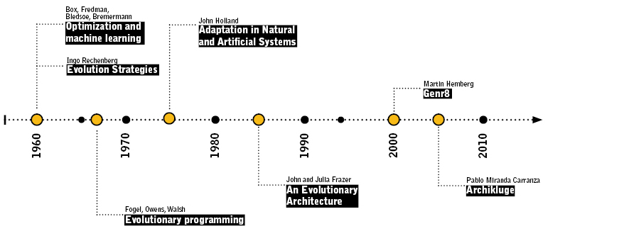
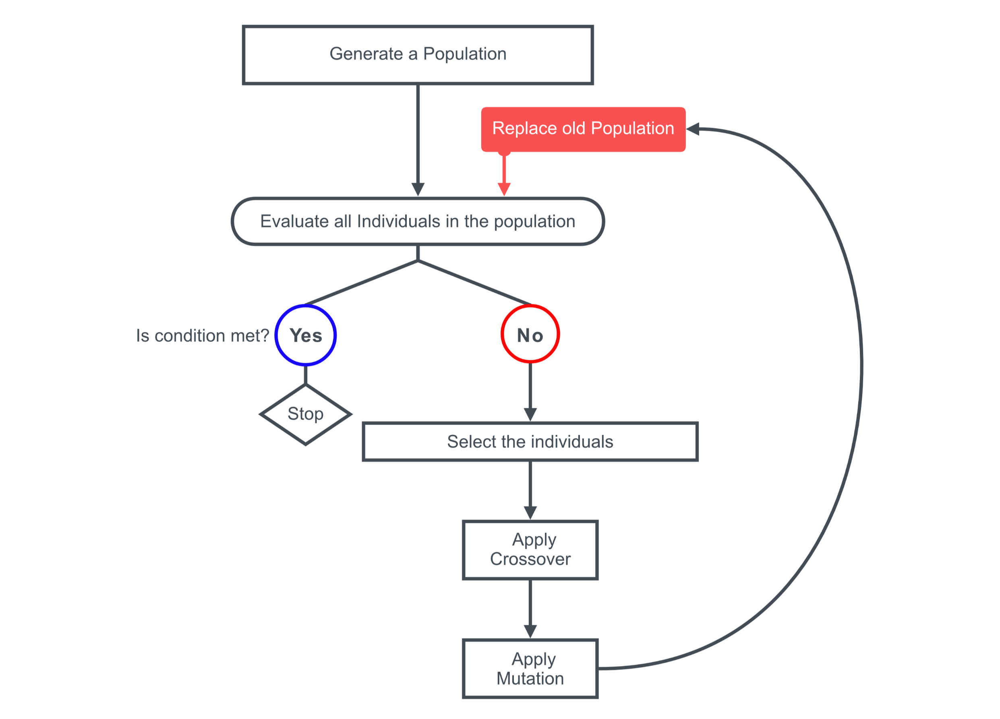

Genetic Algorithms
Genetic Algorithms were invited by John Holland (1929 - 2015) in the 60s and were developed by him, their students and collegues of the Michigan University between 1960 and 1970. Holland was the first to propose the crossover and other genetic combinatorial operators. The aim of Holland, was to use the GAs a formal study of the adaptation and evolution mechanism and how can be exported to computational systems.
The Hollands Book was launched in 1975, under the name "Adaptation in Natural and Artificial Systems". Holland expose the GAs in detail, using the natural selection, crossover, offspring and random mutation. Also Holland was the first to set the Evolutionary Computation under a strong theory base. Holland also expose the schema theory, which is the base of almost all works in Genetic Algorithms.
All of these works sets the base of the Evolutionary Computation. In the 80s GAs were applied in many areas, from math games to engineering. At the beginning the applications were very theoretical, but later they were applied to other fields like: Business prediction, microship design, bio chemistry and molecular biology, time table design for airports, fabrication, productions. Just to name few areas.
A Genetic Algorithm is an heuristic search method based in the Darwin Natural Selection Theory. And it can be used as a optimization tool.
 Timeline of some GAs highlights
Biological Bases
The GAs are based in the natural selection
- The individuals in a population compete all the time for resources. The individuals with more success to get the resources, have more chance to crossover and have offspring.
- The weak individuals has less chance to have offspring.
- Thus the strong individuals genes are copied more times in the future generations than a weak individual.
All the living organism are made by cells, and each cell has the same group of chromosomes, which are represent the plans to build them. Chromosomes are divided by genes, which are a codification of proteins and explain the different features of the organism, for example the eye color. The different options of these genes are called alleles.
Mostly all living organism are diploids, which means that have two pair of alleles per each gen. One allel is inherited from the father and the other from the mother. The offspring is not a sharp copy from the mother and father, because the DNA incorporate small mutations when is copied.
Mostly all living organism have many chromosomes en each cell. The combination of all chromosomes is called genome. The genotype is the set of genes of a living organism, but do not represent the final shape. In the other hand, the phenotype is the expression of the genotype. Both, genotype and phenotype under the influence of the environment represents the final shape of the organism.
Some phenotype is not visible in the organism shape, for example some personality traits or the production of specific enzymes. Other interesting point is that not all the genes are expressed in the phenotype.

Parts of a Genetic Algorithm
The following diagram, shows the GAs compoments and the relation among them.

| step | operation | Laga |
|---|---|---|
| 1 | Creates a random population | Use the class GenrChromosome.cs and or GenrPopulation.cs. But it will depend on your objective. |
| 2 | Evaluation | Is up to you, it depends on your problem. |
| 3 | select the individuals with the highest evaluation | Use the class NaturalSelection.cs |
| 4 | crossovers the selected individuals to produce inheritance | Use the class Crossover.cs |
| 5 | mutate the inheritance | Use the class Mutation.cs |
| 6 | replace the original population | Use the class Replacement.cs or develop your own method. |